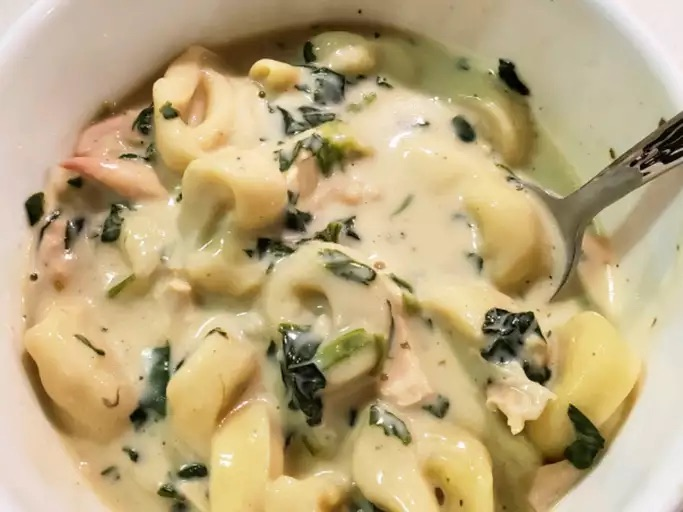

Home
Tortellini recipe

Description
Enjoy a comforting bowl of tortellini with this simple recipe! Boil fresh tortellini until tender,
then toss with a rich sauce of your choice—creamy, tomato, or classic butter and herbs. Finish with
grated cheese and enjoy a delicious, satisfying meal in minutes!
Ingredients
- 250g fresh tortellini (cheese or meat-filled)
- 1 cup pasta sauce (tomato, cream, or butter)
- 2 tbsp olive oil or butter
- 1 clove garlic (optional)
- Salt & pepper to taste
- As much parmesan cheese as you want
- Fresh basil or parsley for garnish (optional)
Steps
- Boil Water – Bring a pot of salted water to a boil.
- Cook Tortellini – Add tortellini and cook until tender.
- Prepare Sauce – Heat your chosen sauce in a pan.
- Combine – Drain tortellini and mix with the sauce.
- Serve – Top with cheese and fresh herbs, then enjoy!